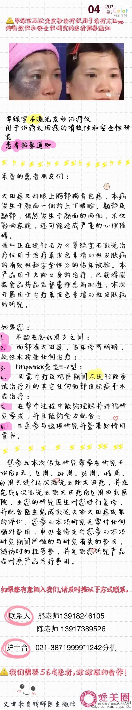

@钱辉_医学美容//@Dri爱美圈:【翠绿宝石激光皮秒治疗太田痣患者开始招募~】@Dri爱美圈:太田痣患者招募# 👏👏👏翠绿宝石激光皮秒治疗太田痣患者开始招募了，如果你是太田痣患者那就速速报名吧，详情请看以下👇 
煎饺的时候，明俊又在旁叨叨食物焦的话会致癌。我很不以为然。1，不煎到有锅巴的地步，煎饺根本就不会好吃。2，发现不少特注重养生的人，过得都是蛮无趣无聊的生活，即使能活那么大岁数，又有啥意思呢？ 不过呢，当时我啥也没说。
周末给#姣姣#读学校要求的《小屁孩日记》，感觉中国孩子的学校生活，跟美国学校差距不大了。我是初中才开始学英语，而姣姣幼儿园就教英语了。 上大二的外甥女慧慧忽然给我打电话，说实习单位派她从上海到北京做大卖场调研，住处正好离我家很近，说有空闲的时候，就到家里来坐坐。 我想起我大二的实习是去农村，在跟农民家住了一个月，期间当然有很多有意思的回忆，但作为工科大学生的实习项目，确实不咋样。 现在孩子们的条件，比我们那时都好很多，这最能看出时代的进步。